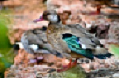

Marreca-pé-vermelho (Amazonetta brasiliensis)
É um marreco de pequeno porte, que vive em lagoas e banhados, uma espécie do género Amazonetta encontrada em grande parte da América do Sul. Pode ser encontrada em todo o Brasil, sobretudo no Rio Amazonas.
